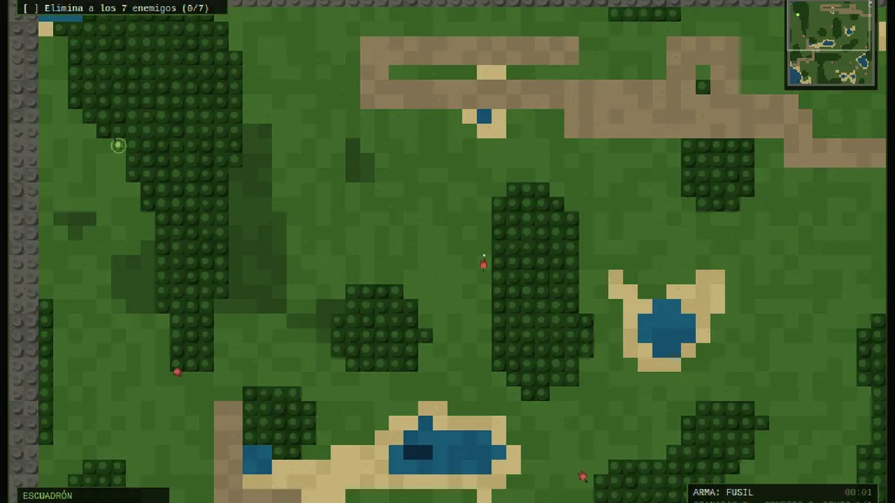

Victor Martin Rodriguez
Frontend developer in Torrox, Málaga, Spain
I've been doing frontend for ten years. Since 2022 I've led frontend at ifeel, an emotional well-being platform for companies. Before that I spent five years at PcComponentes, where I was the first frontend hire and ended up leading a team of seven.
What interests me most is the part nobody sees: how a site gets deployed, how it stays maintainable two years later, and how much it weighs.
You can find me on LinkedIn (opens in a new tab) and GitHub (opens in a new tab).
Work
2022 – now
ifeel
Frontend lead
I wrote the product's theme system by hand, on top of Tailwind. I also built the Storybook component library and the Chat-Core shared by our three platforms.
I run every frontend pipeline. We moved from Bitbucket to GitLab with a single pipeline for every team, and a production deploy now takes about four minutes.
When the problem isn't in the browser, I go down to the backend and fix it there. I'm also on the committee that decides how the team uses AI.
React, TypeScript, Tailwind, Vite, Vitest, Storybook, GitLab CI, Bun, AWS S3 and Playwright.
2022
Freepik
Frontend Developer
2017 – 2022
PcComponentes
Senior Frontend Developer
I joined as the first frontend developer and ended up leading a team of seven. We moved the shop from Symfony and jQuery to React and TypeScript, got the site ready so Black Friday wouldn't take it down, and set up the first Storybook and the first internal package registry.
2017
Koalum and freelance work
Full Stack Developer · Torre del Mar and Edinburgh
Bespoke applications in PHP, JavaScript and Angular 2.
2016
Golden Race
Front End Developer
Virtual sports betting broadcast by satellite to parts of Africa with very little bandwidth. That's where I learned to count kilobytes.
2015 – 2016
Grupo Vid
Web Developer
A multiplayer bingo game for Facebook, with chat and payments, and hybrid apps with PhoneGap.
2015
Glanzkinder
Front-End Developer · Cologne
Internal tools for Deutsche Bahn, with AngularJS.
A recent commission
2026
Nadia Fitness Dance Studio
The website for a dance and fitness studio in Torrox Costa. It's small, but I built it the way I build big ones. The copy and timetable live in one JSON file and a script generates the pages. axe finds no accessibility errors, the site works without JavaScript, and the hero video can be paused.
It's live at nadiafitnessdance.es (opens in a new tab).

Outside work
At home I make games and other experiments. Here are a few:

MOONVERSE
Three.js and Tone.js
A turn-based guitar-solo duel between masked figures, presented like a VHS tape someone found. Everything you play is recorded, and at the end you keep the song as a .wav and the fight as a video.

A Cannon Fodder tribute
TypeScript and Canvas
A tribute to the 1993 Cannon Fodder, written from scratch with no engine. Terrain, sprites and sound are all generated in code.

Kerbal Lite
Three.js
A rocket lifting off a planet with Newtonian physics. The challenge is reaching orbit.

Japanese Temple
GZDoom WAD
Two maps for Doom, a temple and a castle. The tatami, shoji, wood and roof-tile textures come out of Python scripts.

Pognanza
Lua and LÖVE, with Daniel
A turn-based strategy roguelike where you build your pog piece by piece. Two of us are making it, and this is my version.
And on GitHub
- DyslexicFontReplacer (opens in a new tab): a browser extension that swaps the fonts on any site for a typeface designed for dyslexia.
- mako_framework (opens in a new tab): classic RPG menus built with nothing but HTML and CSS.
Education
2016 – 2017
Postgraduate in Digital Forensics and Cybersecurity, University of Málaga
2015 – 2016
Higher VET Diploma in Multi-platform Application Development, IES Portada Alta
2012 – 2015
Higher VET Diploma in Web Application Development, IES Campanillas
2009 – 2011
VET Diploma in Computer Systems and Networks, IES Jorge Guillén
Languages
Spanish (native), English C1 (Cambridge) and German A2, picked up while working in Cologne.